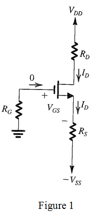

Consider the expression for drain current to calculate the gate-source voltage,  .
.
Substitute  for
for  , for
, for  and
and  for
for  .
.
Thus, the value of gate-source voltage,  is .
is .
Refer to Figure 5.52(c) in the textbook.
Draw the equivalent circuit diagram with notations.

Consider the expression for drain current to calculate the gate-source voltage, .
Substitute for , for and for .
Thus, the value of gate-source voltage, is .
It is given that one third of supply voltage appears across both .
Calculate the value of drain resistance,  .
.
Substitute  for
for  and for
and for  .
.
Thus, the value of drain resistance,  is .
is .
Calculate the value of source resistance,  .
.
Substitute  for
for  and
and  for
for  .
.
Thus, the value of source resistance,  is .
is .
Calculate the value of gate voltage,  .
.
Since the voltage at the source terminal is the voltage across the voltage across the source resistance, it is equal to as the voltage across source resistance is, .
Substitute  for
for  and for .
and for .
Thus, the value of gate voltage,  is
is  .
.
The voltage across the resistance is  , it is equal to 5 V and the share of the voltage division of the source is more across
, it is equal to 5 V and the share of the voltage division of the source is more across  , voltage is directly proportional to the resistance, so
, voltage is directly proportional to the resistance, so  is greater than
is greater than  .
.
The largest of  and is
and is  , so the value of the resistor
, so the value of the resistor  is .
is .
Substitute  for , for
for , for  and
and  for
for  .
.
The value of the resistance is
Calculate the value of drain-source voltage at the edge of saturation.
Substitute  for
for  and
and  for
for  .
.
Thus, the value of drain-source voltage at the edge of saturation is .